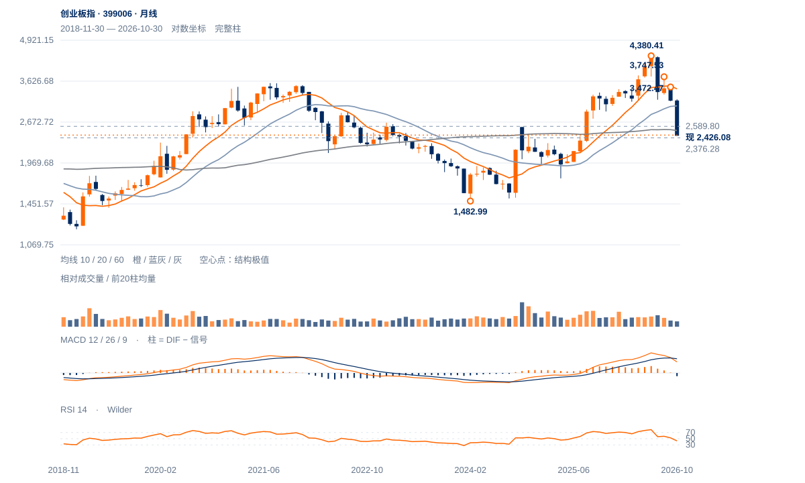

弱势与近底反抽并存
趋势证据仍偏弱，2376附近是决定低位反应的关键。跌势后反抽可以发生，但2494未收回前，不足以将价格恢复升级为中期底部。
趋势证据仍偏弱，2376附近是决定低位反应的关键。跌势后反抽可以发生，但2494未收回前，不足以将价格恢复升级为中期底部。
未来2—6周偏向2376附近反复与弱反抽，2494—2589是逐层阻力。2626原两日过滤、2672中峰未收回前，中期底部判断仍不足。
未来1—3个月，守住2376并完成较高周谷才支持低位筑底；连续两周收低2376，则深度回撤继续展开。2025低1757距现价很远，缺少可确认测幅，不作为当前基准预测。月线重新保持2589以上是长期修复的首个升级条件。

展开图表 ↗2024低点1482.99至今年6月4380.41的上涨已回吐67.45%，跌过2589.80的61.8%回撤。2024年10月高2576.22与该比例位接近，60月均线2510.67也在上方，旧突破区已转成反弹障碍。10月月收2413.63低于长期均衡，当前更接近深度回撤中的承接检验。
7月3158.14低点已破，8月3747.53和9月3472.47形成较低反弹峰，周线下降未结束。11月4日2376.28附近虽有动量减速，价格修复仅覆盖9月跌波很小一部分。动量改善与下降结构并存，应由2494及更高价格区的实际回收解决。
周线较低高点与破谷形成下降结构，2580附近旧突破区已成为供应。2376承接能否推动2494以上回收，是筑底的首段检验。
9月左高至低点跌31.57%，现价仅修复该价差4.54%；近20日仍跌12.49%，相对沪深300比值跌9.13%，为本组较弱表现。
11月3日以来尾段8日净升1.44%，日均量约为前跌波1.29倍；13日量比1.06却收于振幅底部8%，需求增加尚未换来持续价格结果。
2494是较早低点转为上方阻力的区域，现价距2376仅0.48ATR。日线动量修复与周线弱势冲突，必须由2494及更高结构的回收解决。
先收回2494、2554，再检验原2626两日条件；2672中峰另核。
2376原低点失守，否定当前二次测试守住的假设。
低位收盘动量已有改善，价格距旧低很近，急反弹可以早于趋势反转；重新收复2511—2589会明显削弱当前弱势判断。
| 周期 | 最后完整柱 | 图示柱数 | RSI14 | ATR14 | MACD柱 |
|---|---|---|---|---|---|
| 日线 | 2026-11-13 | 185 | 35.60935 | 104.01786 | 21.88704 |
| 周线 | 2026-11-13 | 156 | 26.76616 | 243.2482 | -120.17973 |
| 月线 | 2026-10-30 | 96 | 42.94575 | 434.08193 | -73.45504 |
国内完整周线至11月13日；11月月线进行中。指数价格不复权，长期历史按实际可用起点。